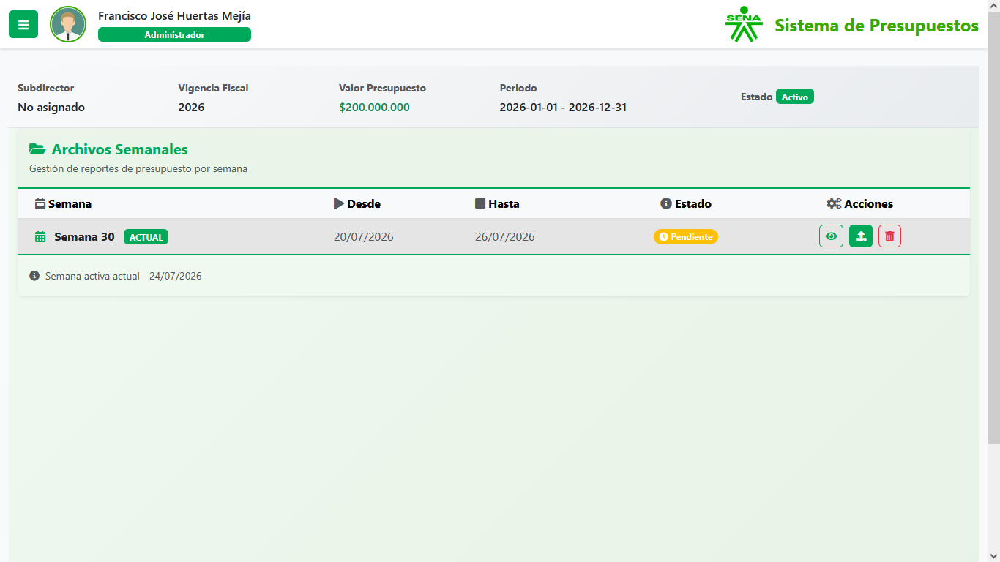

Presupuestos SENA
PHP · MySQL · JavaScript · JQuery · Bootstrap
Gestión completa de CDP, RP y pagos. Usuarios con roles y permisos, menús dinámicos desde base de datos, comparación de recursos comprometidos vs invertidos, identificación de CDP sin ejecución e indicadores de crecimiento semanal.
Ver caso →